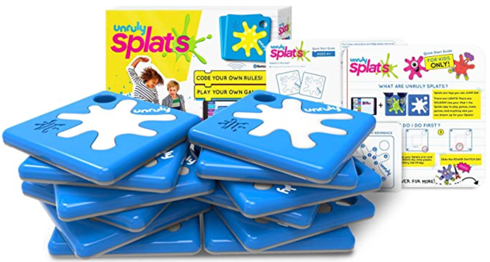
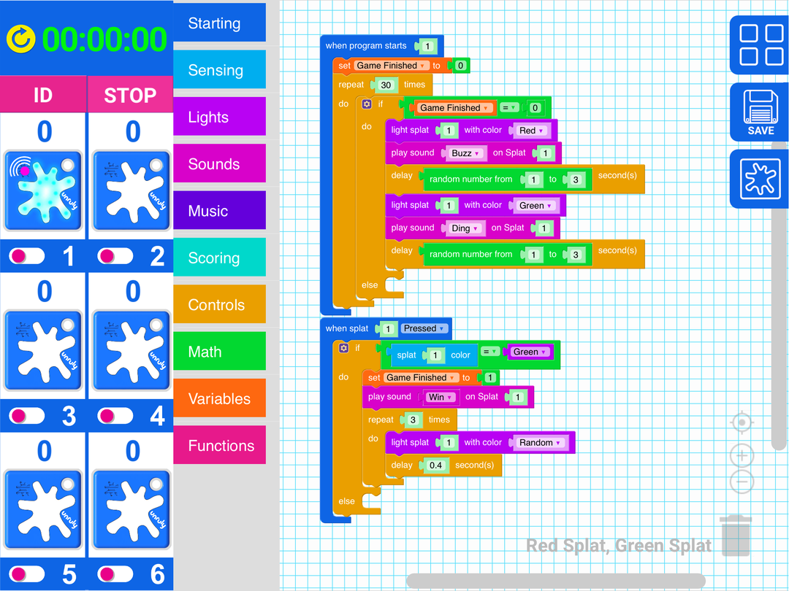
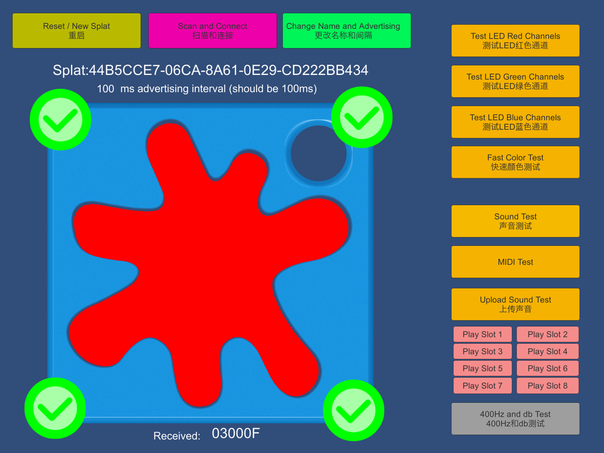

Since 2018 I've been a developer at Unruly Studios. Unruly is the maker of Splats, super-durable, programmable devices that help students learn computational thinking and STEM skills through active play. I am part of the team that developed the Splats firmware and iOS and web apps.

Stompable electronics.

The Blockly-based app runs on iPads and Chromebooks. The web app uses Web Bluetooth to connect your coding environment to six Splats.

The Splattester2000 app used in the factory to test Splats as they're flashed and assembled.
More about Unruly Studios